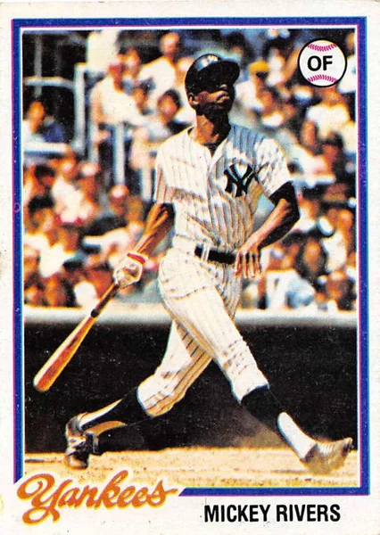

Mickey Rivers "Mick the Quick"
Career Highlights & Facts
(Facts are AI-generated and may require verification)
- Known for elite speed and base-stealing ability as a primary leadoff hitter.
- Served as a defensive anchor in center field throughout a career spanning 15 seasons.
- Contributed to back-to-back championship titles in consecutive seasons.
Would you like to find out more about Mickey Rivers?
This article is assigned to
Joseph Wancho
Full Name
John Milton Rivers
Born
October 30, 1948 at Miami, FL (USA)
Stats
Baseball Reference
Retrosheet
John Milton "Mickey" Rivers is an American former baseball player. He played in Major League Baseball from 1970 to 1984 for the California Angels, New York Yankees and Texas Rangers. As a Yankee, he was part of two World Series championship teams, both defeating the Los Angeles Dodgers, in 1977 and 1978. "Mick The Quick" was generally known as a speedy leadoff hitter who made contact and was an excellent center fielder, with a below-average throwing arm.
Career Totals
| WAR | AB | H | HR | BA | R | RBI | SB | OBP | SLG | OPS | OPS+ |
|---|---|---|---|---|---|---|---|---|---|---|---|
| 32.7 | 5629 | 1660 | 61 | .295 | 785 | 499 | 267 | .327 | .397 | .724 | 106 |
Statistics via Baseball-Reference.com
The Original Clue